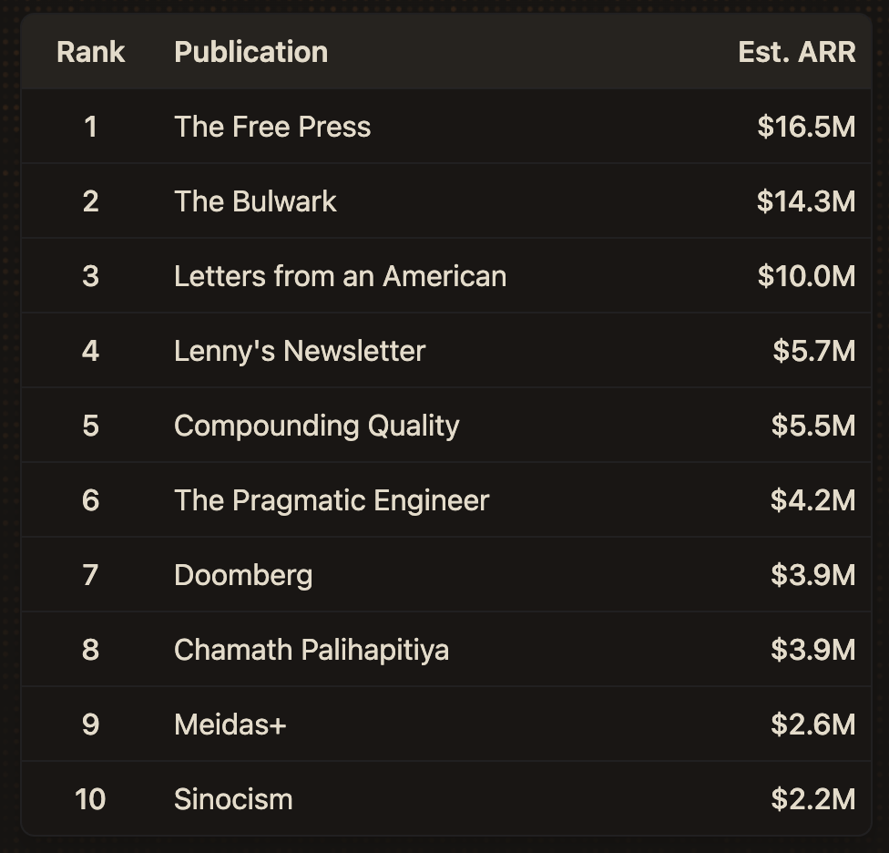

New project: Substats
Substats is a database of metrics for popular Substacks.
It offers in-depth data on thousands of leading Substacks, including subscriber counts, revenue, growth rates, sponsorships, and more.
Below is a sneak peek at the top 10 Substacks by estimated monthly revenue:
This information is valuable for media companies, PR firms, ad agencies, talent agencies, investment companies, and others.
Substack is one of the most influential platforms on the internet today, and I believe that influence will continue to grow over time.
If you work in an industry affected by content creators, you need to understand Substack.
In the past, "social monitoring" businesses have offered analytics for companies like Facebook, Twitter, Instagram, Snapchat, TikTok, and more – with a decent amount of success.
For some reason, there hasn't been a business that makes fair use of public data from Substack to help professionals deeply understand its ecosystem.
Substats is the best way to understand the Substack ecosystem.
Pricing is:
- Individuals: $250/mo
- Teams (up to 5 seats, plus CSV downloads): $500/mo
- Enterprises (unlimited seats & features): Custom pricing
I ran Substats in private beta and received great feedback from early users.
Check it out at substats.io, and schedule a demo here.
Will post more updates here on the backstory.